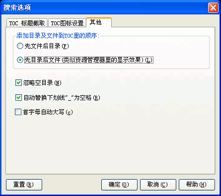

您可以通过选取程序选项菜单下的"搜索选项..."并选取"其他"跳格看到这个对话框。关于这个对话框的使用请看下面的具体描述.

添加目录及文件到TOC里的顺序:
Easy CHM自动搜索您指定的目录下的所有文件及目录，并自动按照资源管理器中的目录文件结构生成CHM的目录结构，但程序默认是按照文件在前目录在后的原则，如果您希望生成的CHM目录结构与资源管理器的顺序一样，您可以选中“先目录后文件”。
忽略空目录:
决定CHM是否把空目录也添加到CHM的目录里。
自动替换下划线"_"为空格:
选中则程序会自动把文本里的下划线"_"替换为空格 -
在选择截取文件名为目录项的时候，而文件名又是由下划线"_"连缀起来的，这个选项会比较有意义。
首字母自动大写:
选中则程序会自动把文本里的首字母转换为大写-如果首字母是中文则忽略。
| 版权所有 © 2000-2007 国华软件 保留全部权利. |